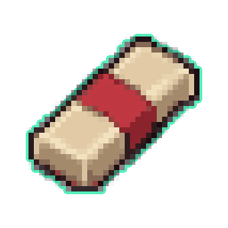

#81 · item_81ОбычныйMegabonkOatsНаша иконкаIron WaferКрепкий сухарьЭффект оригинала в MegabonkПовышение максимального здоровьяИсточникНаш PNG · 81Связь по ID · JSONОсновной — актуальный · items-current64 px32 px